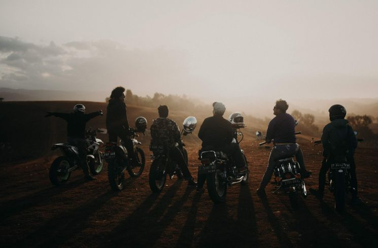

Pemburu Konten Riding Wajib Tahu, Ini Dia Beberapa Tips dari Ahlinya
Pasalnya, riding ramai-ramai saat ini memang tidak diperbolehkan mengingat kebijakan pemerintah terkait PPKM
Ketika melakukan riding bareng-bareng pastinya selalu ada rekan yang mengabadikan momen baik dalam bentuk foto ataupun video.
Hal ini dilakukan demi mendapatkan konten menarik sekaligus kenang-kenangan untuk para pemotor itu sendiri
Mengabadikan momen saat berkendara memang tidak bisa sembarangan. Ada beberapa tips yang bisa dilakukan agar hasilnya terlihat ciamik
Salah satu fotografer profesional, Gala Indiga, membagikan sebuah tips mengabadikan momen lewat foto saat berkendara.
Menurut Gala, berkendara merupakan kesempatan untuk mengabadikan momen menakjubkan.
Menurutnya, jika subjeknya sepeda motor, maka yang dibutuhkan pada gambar tersebut adalah detailing yang dapat memperlihatkan bagian-bagian sepeda motor dengan lebih jelas.
Untuk fotografi outdoor saat berkendara, perlu menyatukan jalan, sepeda motor, dan latar belakang untuk membuat cerita yang bagus dari sebuah gambar.
Untuk gear-nya sendiri tidak perlu kamera yang canggih dengan lensa yang mahal, kamera standar atau kamera smartphone saja sudah cukup, yang penting mengabadikan sebuah momentum.